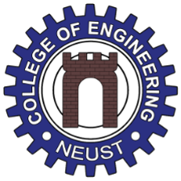

Nueva Ecija University of Science and Technology (NEUST) is a state university in the Philippines, located in Cabanatuan City, Nueva Ecija. The university offers a wide range of programs, including engineering courses, which are among its most popular and in-demand offerings. NEUST's College of Engineering offers a comprehensive curriculum that covers a broad spectrum of engineering disciplines. The college is equipped with state-of-the-art facilities and laboratory equipment, making it an ideal place for students to learn and conduct research. The college's engineering programs are accredited by the Philippine Technological Council (PTC), which ensures that they meet national standards for quality education. The PTC also ensures that the college's faculty members are qualified and competent in their respective fields.
The Bachelor of Science in Civil Engineering program prepares students to design, build, and maintain infrastructure such as buildings, roads, and bridges. The program covers a wide range of subjects, including mathematics, physics, materials science, construction management, and structural analysis.
The Bachelor of Science in Electrical Engineering program focuses on the study of electricity, electromagnetism, and electronics. The program covers topics such as circuit analysis, digital electronics, power systems, and control systems.
The Bachelor of Science in Electronics Engineering program is a specialized field of study that focuses on the design and development of electronic systems, such as computers, communication devices, and medical equipment. The program covers topics such as microelectronics, digital signal processing, and communication systems.
The Bachelor of Science in Mechanical Engineering program prepares students to design, develop, and maintain mechanical systems, such as machines, engines, and tools. The program covers subjects such as thermodynamics, fluid mechanics, materials science, and manufacturing processes.
NEUST's College of Engineering has a faculty of experienced and qualified instructors who are dedicated to helping students succeed in their chosen fields. The faculty members are actively involved in research and development projects, which provide students with opportunities to gain practical experience and knowledge in their respective fields. The college also offers student organizations and clubs, such as the Institute of Civil Engineers, Institute of Electrical Engineers, Institute of Electronics Engineers, and the Society of Mechanical Engineers. These organizations provide opportunities for students to develop their leadership skills, network with professionals in their fields, and participate in extracurricular activities that enhance their learning experiences. NEUST's College of Engineering also offers industry partnerships and collaborations, which provide students with opportunities to gain practical experience in their fields through internships, cooperative programs, and research projects. The college partners with local and national government agencies, as well as private companies, to provide students with hands-on experience in their chosen fields.
NEUST's College of Engineering is committed to providing quality education to its students. The college is equipped with modern facilities, including classrooms, laboratories, and workshops, that provide students with hands-on experience and practical knowledge in their chosen fields. NEUST's College of Engineering also offers scholarships and financial assistance to qualified students who demonstrate academic excellence, financial need, or both. The college also offers work-study programs that provide students with opportunities to earn money while gaining practical experience in their fields. In conclusion, NEUST's College of Engineering is an excellent choice for students who want to pursue a career in engineering. The college offers a comprehensive curriculum, experienced and qualified faculty members, modern facilities, and a wide range of opportunities for practical experience and professional development. With its commitment to quality education and industry partnerships, NEUST's College of Engineering is a top choice for aspiring engineers in the Philippines.